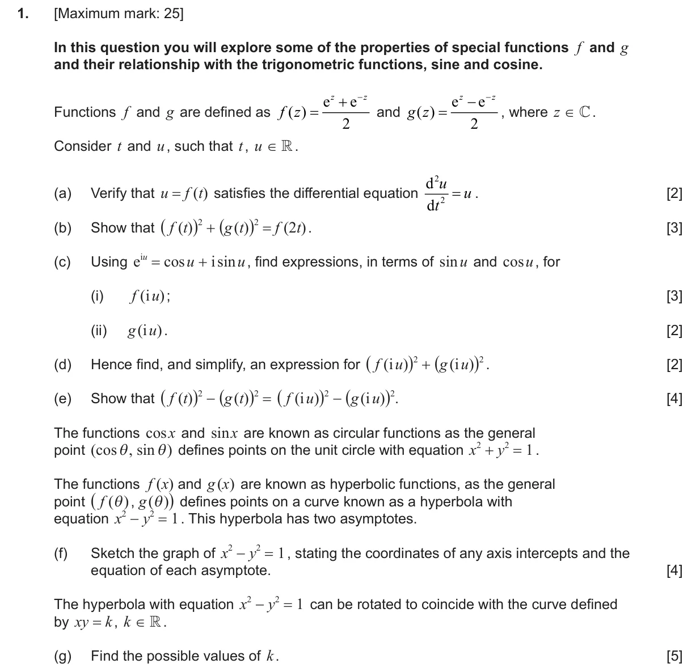
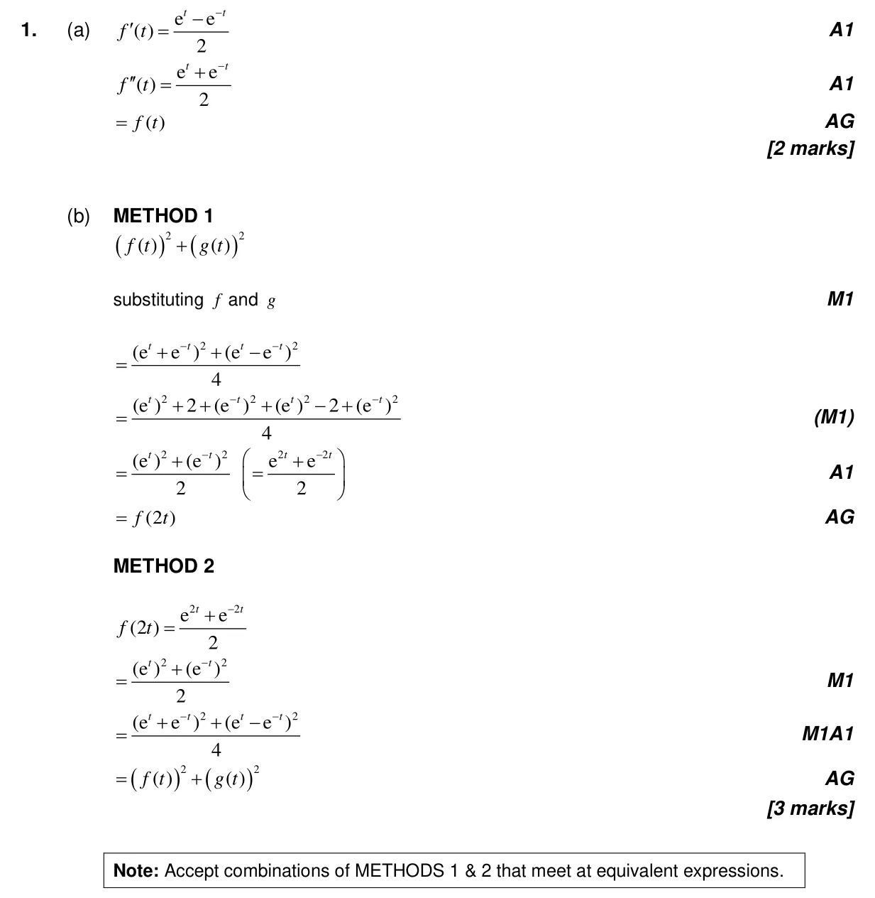
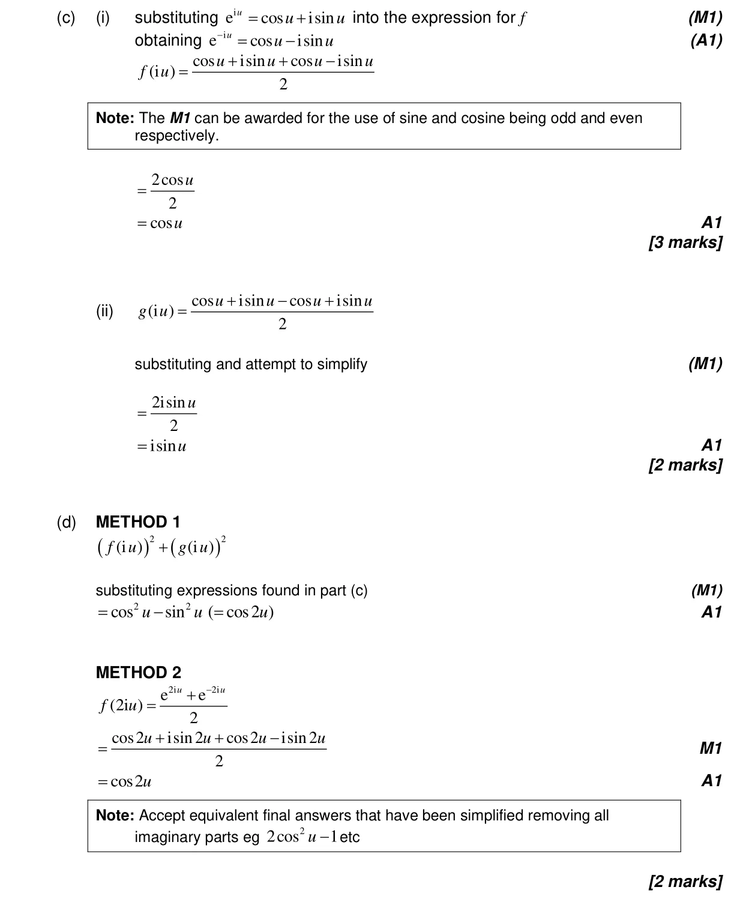
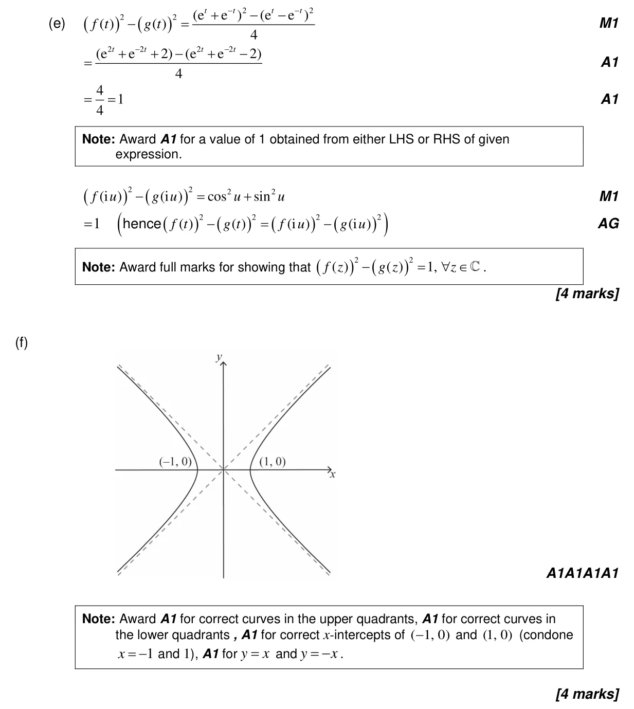
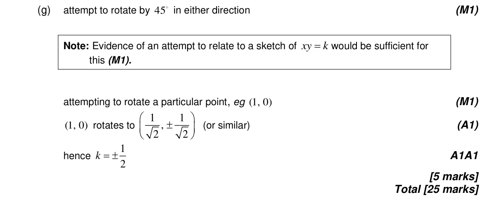

25 marks P3 TZ0 Calculator 1.6 Simple deductive proof1.13 Modulus-argument and Euler forms of complex numbers3.6 Pythagorean identity and double angles2.11 Transformations of graphs2.8 Reciprocal and simple rational functions, equations of asymptotes2.3 Graphs of functions2.4 Key features of graphs1.7 Laws of exponents and logarithms3.11 Relationships between trigonometric functions and the symmetry of their graphs5.7 The second derivative5.6 Differentiating polynomials n in Q, chain, product and quotient rules1.12 Complex numbers in Cartesian form and the complex plane Question Hide breakdown abc(i)c(ii)defg Markscheme 